NPCs（NPC一覧）
ゲーム内に登場するすべてのNPC。クエスト、ショップ、格闘スタイル、進化などに関わるキャラクター。
Main NPCs（メインNPC / ストーリーライン）
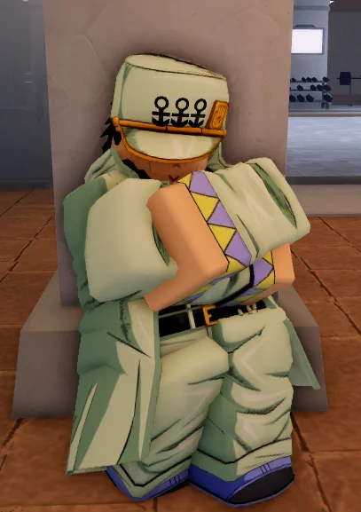
Jotaro Kujo（空条承太郎）
メインストーリーのキーNPC。ジムの2階にいる。
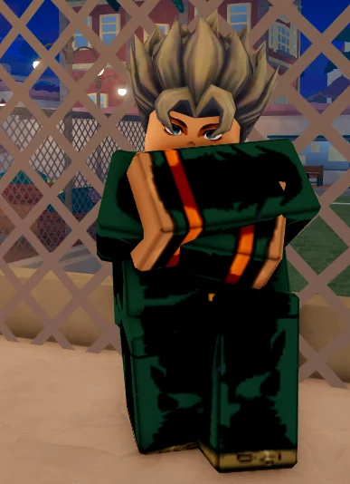
Koichi Hirose（広瀬康一）
ストーリークエストを提供するNPC。
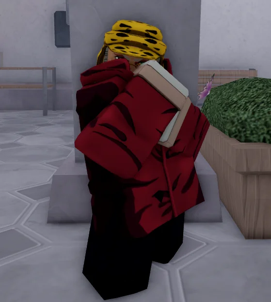
Joseph（ジョセフ）
ストーリー関連NPC。
Shigechi（重ちー）
ストーリークエストNPC。
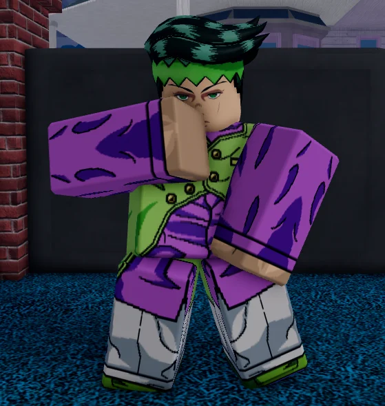
Rohan（岸辺露伴）
ストーリー関連NPC。
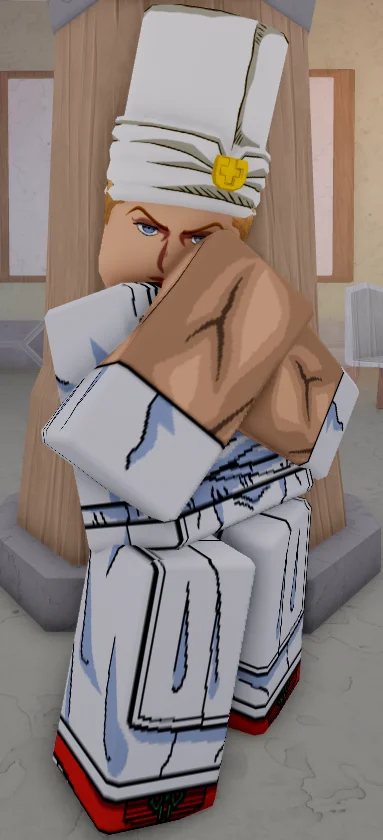
Tonio Trussardi（トニオ・トラサルディー）
料理関連のストーリーNPC。
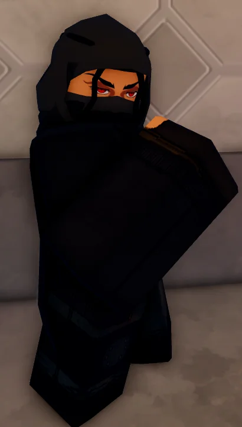
Lowly Thief（小泥棒）
ストーリークエストの敵NPC。
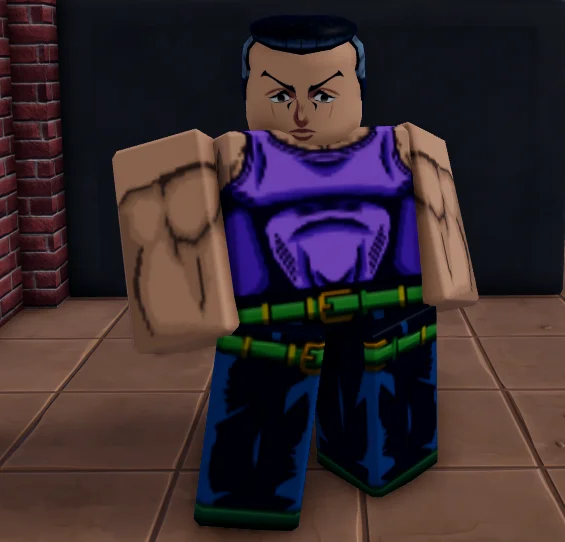
The Hand Man（ザ・ハンド使い）
ストーリークエストの戦闘NPC。
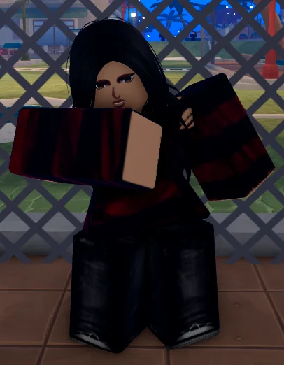
Masuyo（マスヨ）
ストーリー関連NPC。
Mr. Rengatei（レンガテイ）
ストーリー関連NPC。
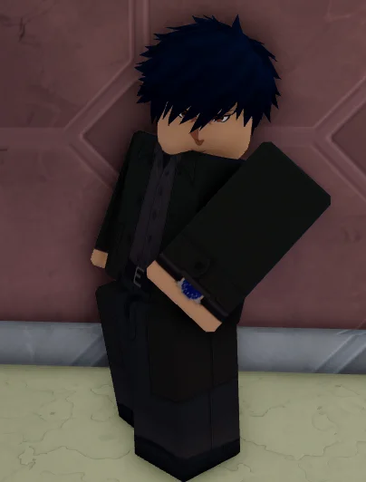
Akihiko（アキヒコ）
ストーリー関連NPC。
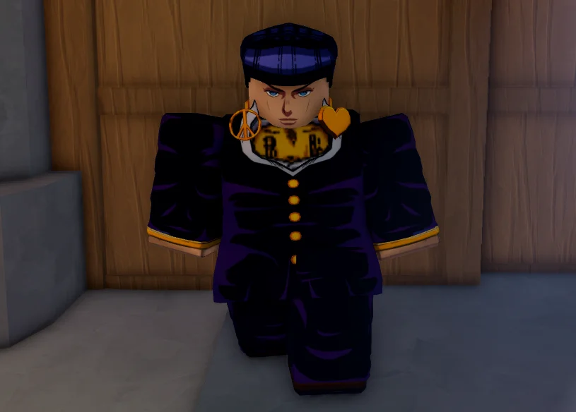
Josuke Higashikata（東方仗助）
メインストーリーのキーNPC。
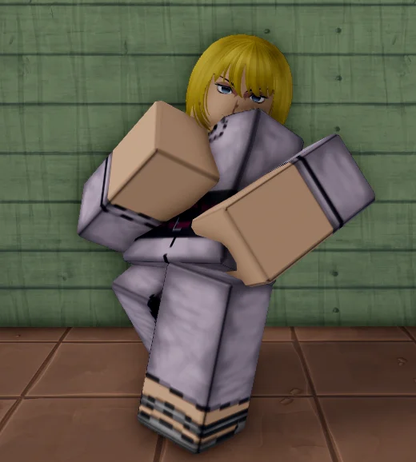
Aya Tsuji（辻彩）
ストーリー関連NPC。
Important NPCs（重要NPC / 機能NPC）
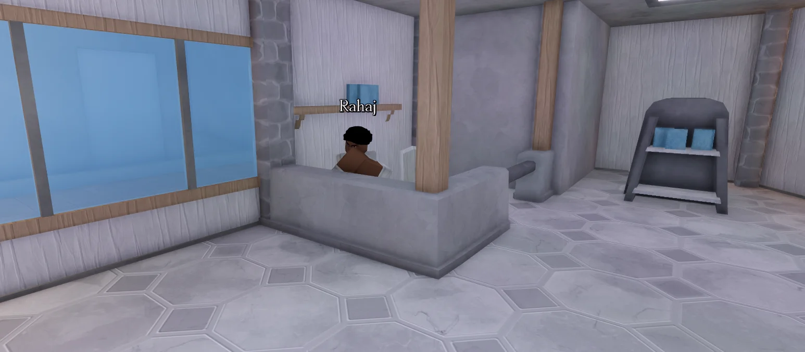
Rahaj（ラハジ / ショップNPC）
音楽トラック（50,000キャッシュ）、アクセサリー（1,000〜2,500キャッシュ）、各種エッセンスを販売。
Gupta（グプタ / クラフトNPC）
Legendary Chest、Rare Chest、Common Chest、Plank Skateboardをクラフト可能。
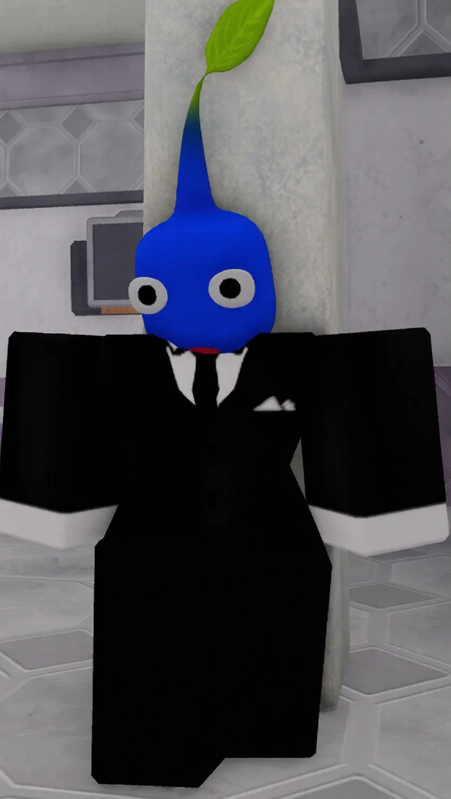
Arch Mage（アーチメイジ）
プレステージ担当NPC。ショップでアイテム・パーク・スキン・EDICT強化を販売。
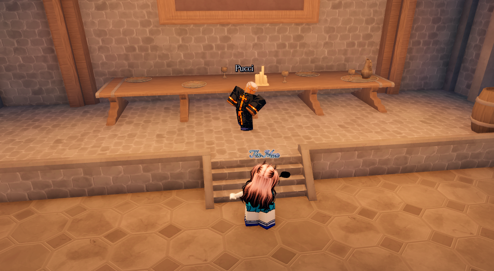
Pucci（プッチ神父）
スタンド進化の中心NPC。「Journey to Heaven」クエストを提供。丘の穴に入って左。
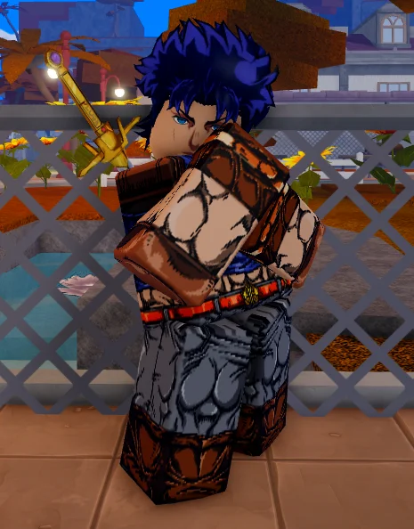
Ancient Ghost（古代の幽霊 / 波紋）
波紋（Hamon）の全技を習得できるNPC。
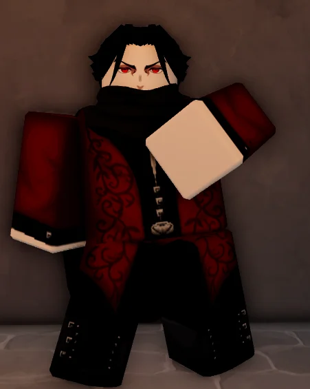
Elder Vampire（エルダーヴァンパイア）
ヴァンパイアの全技を習得できるNPC。
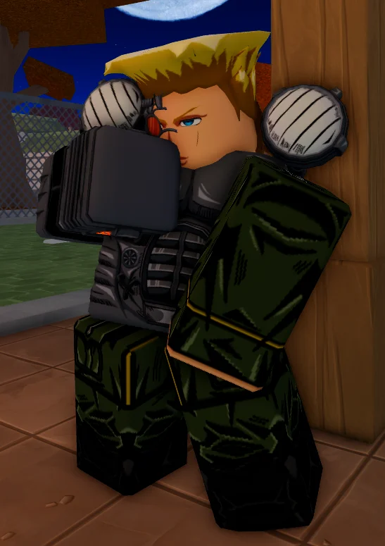
Rudol von Stroheim（シュトロハイム / サイボーグ）
サイボーグの全技を習得できるNPC。バス停に寄りかかっている。
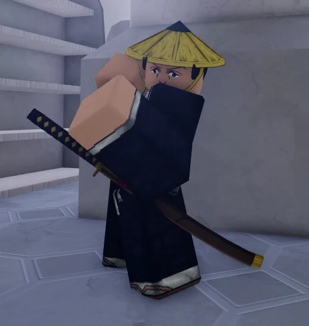
Samurai Master（侍マスター）
剣道スタイルのクエストを提供するNPC。
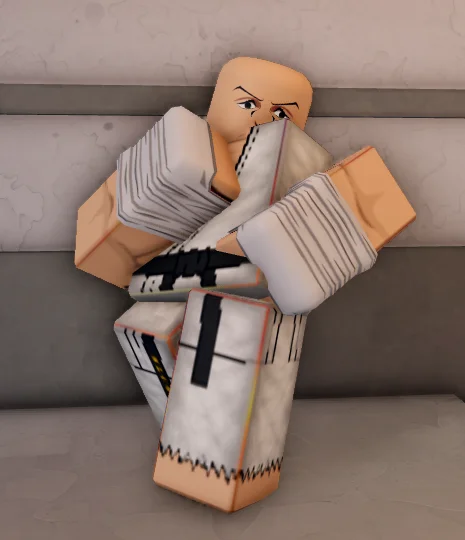
Karate Sensei（空手師範）
空手スタイルのクエストを提供するNPC。
Boxing Coach（ボクシングコーチ）
ボクシングスタイルのクエストを提供するNPC。
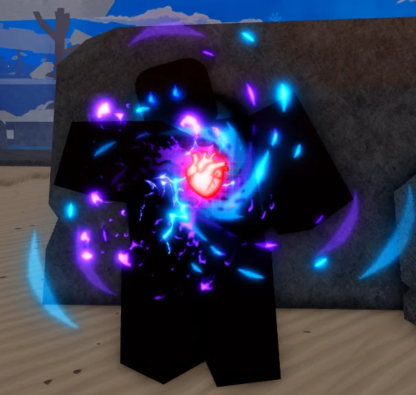
Determination NPC（ディターミネーション）
ディターミネーション能力を習得するNPC。Arch Mageで強化可能。
Merchant NPC（商人NPC）
フィールドに出現する行商人。
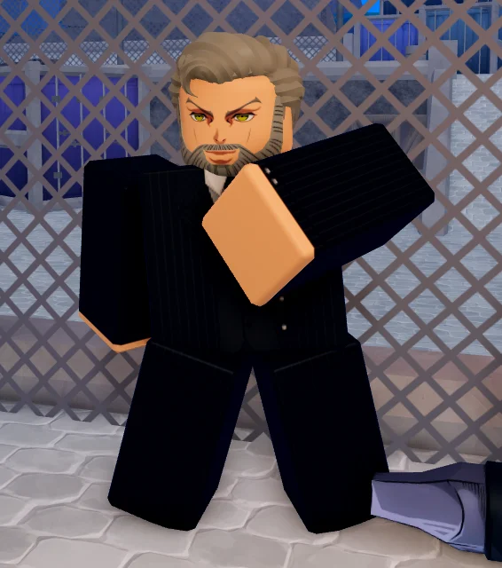
Mafia Boss（マフィアボス）
ギャング関連のNPC。
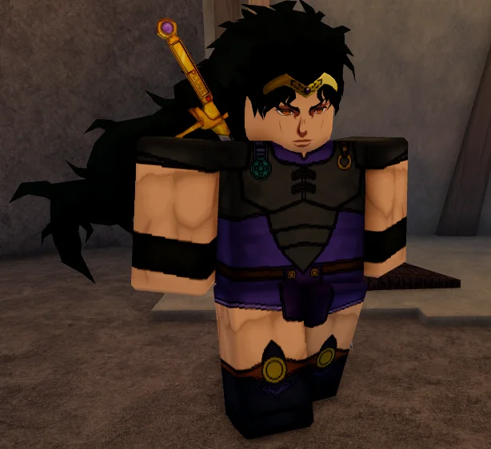
Bruford（ブラフォード）
クエスト「The Heroes Blade」を提供。Night Vampire 50体撃破 + ワールドイベント1回完了。
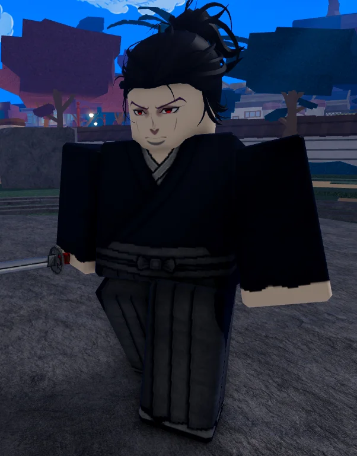
Miyamoto（ミヤモト）
武器関連のNPC。
Side Quest Givers（サイドクエスト提供NPC）
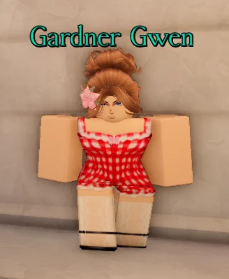
Gardner Gwen（ガーデナー・グウェン）
「Garden of Secrets」クエスト（9ステップ）。報酬: XP（100〜10,000）、ロカカカ、Legendary Chest。
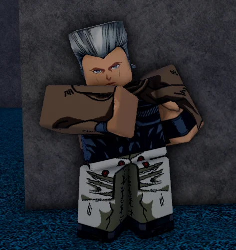
Jean Pierre Polnareff（ジャン・ピエール・ポルナレフ）
サイドクエストを提供するNPC。
Speedwagon Researcher（SPW財団研究員）
サイドクエストを提供するNPC。
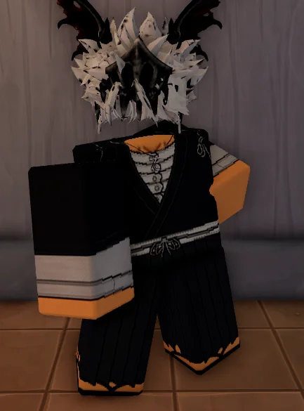
Shozuki（ショウズキ）
「The Fool」クエスト: Raid Muhammad AvdolをBランク以上で5回クリア → The Fool獲得。報酬: 1k XP + The Fool。
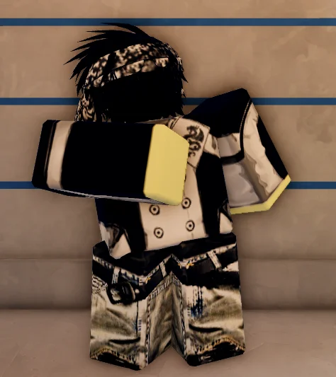
Kaiser（カイザー）
サイドクエストを提供するNPC。
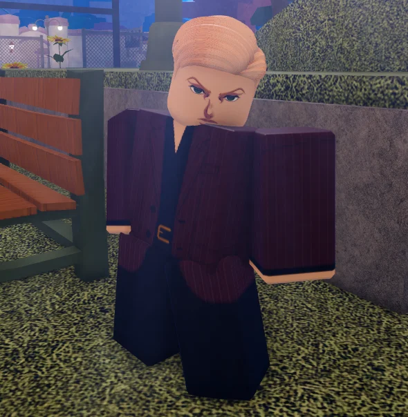
Geordie Greep（ジョーディー・グリープ）
「The New Sound」クエスト: Dr. Bosconovitch撃破、Okuyasu PRIME撃破、Raid AvdolをSSSランク3回。報酬: 5k XP + The Magician Perk。
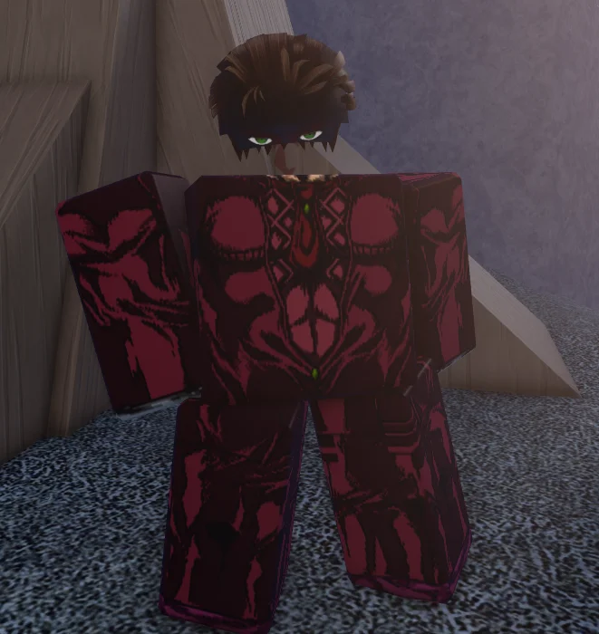
Shadowy Figure（影の人物）
謎のサイドクエストNPC。
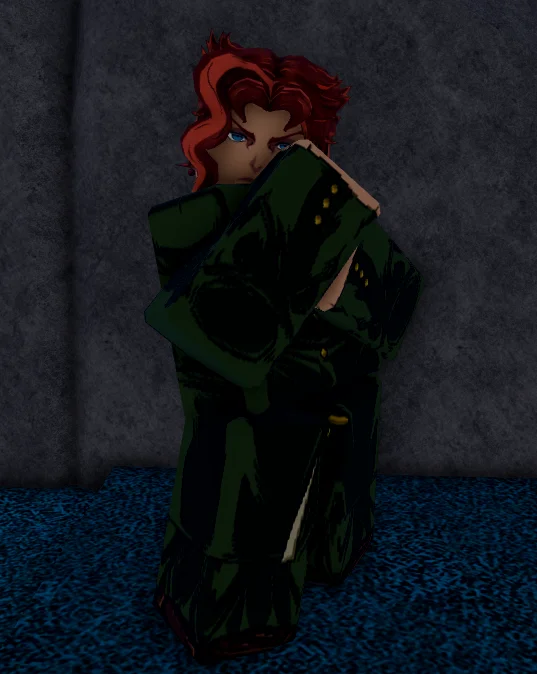
Kakyoin（花京院典明）
サイドクエストを提供するNPC。
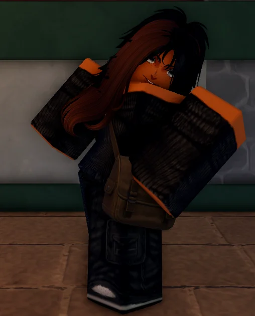
Rose（ローズ）
サイドクエストを提供するNPC。
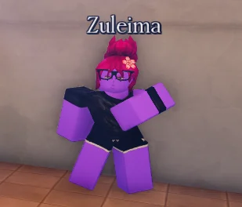
Zuleima（ズレイマ）
「The Plank Skateboard」クエスト: 1v1/PvPミッションボードで5勝。報酬: Plank Skateboard x1。
Yuto Horigome（堀米雄斗）
「Fede LNG, XX」クエスト: Gold Coin 5枚を渡す。報酬: Skateboard x1 + 5k XP。
Enemy NPCs（敵NPC）
Night Vampire（ナイトバンパイア）
夜間にのみ出現する敵NPC。バス停10番辺りやキラークインが湧く周辺に出現する。
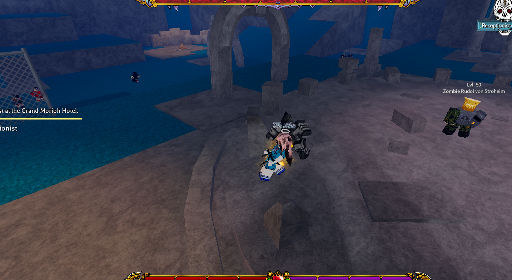
Zombie Cyborg（ゾンビサイボーグ）
バス停18番周辺に出現する敵NPC。上の画像が出現ポイント。
コメント
匿名で自由にコメントできます！攻略情報の共有や感想をどうぞ
コメントを投稿
コメントを読み込み中...